1088D24 WATER PUMP RIGID COOLANT INLET PIPE - R.R.
- Path
- Procedures > 10 ENGINE > 1088 ENGINE COOLING > 1088D COOLANT PIPES AND HOSES > 1088D24 WATER PUMP RIGID COOLANT INLET PIPE - R.R.
- Kind
- repair procedure (removal / refitting; the operation number is the code)
- Applies to
- all engines; all production periods
- Interactive page
- https://sloeber94.github.io/elrnDB-fCrm/en/#/194000407
Applies to: engines: 2.2; all production periods
 Removing
Removing
 Refitting
Refitting- Position the vehicle on a lift.
- Make sure that the ignition key is in the OFF position, then disconnect the battery terminal (-).
Description | Connector | |
|---|---|---|
- | Battery |
1. Remove the sound insulation cover fastened to the engine by three pins.
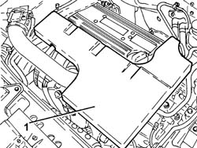
Applies to: engines: 2.2; all production periods
1. Undo the coolant drain plug in the water pump and drain the coolant.
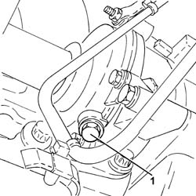
Applies to: engines: 2.2; all production periods
1. Disconnect the electrical connection from the engine coolant temperature sensor.
Description | Connector | |
|---|---|---|
1 | Engine coolant temperature sensor/sender unit |
2. Loosen the collar and disconnect the upper coolant input sleeve to the radiator, thermostat side.
3. Loosen the bands and disconnect the coolant delivery and return pipes to the climate control system heater, thermostat side.
4. Undo the engine coolant temperature sensor and remove it.
5. Undo the bolts (5a) and remove the thermostat (5b) complete with water pump rigid fluid inlet pipe (5c) and O-rings (5d).
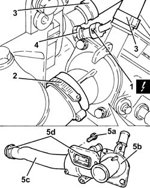
Applies to: engines: 2.2; all production periods
1. At the bench, separate the thermostat (1a) from the water pump rigid fluid inlet pipe (1b).
2. Remove the seal.
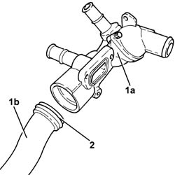
Applies to: engines: 2.2; all production periods
Refitting
Removing1. Tighten the coolant drain plug to the water pump to the recommended torque.
Component | Fastening | dia | Value (daNm) | Validity |
|---|---|---|---|---|
Drain plug on water pump | - | M20 x 1.5 | (water pump side) 2.0 | 2.2 |
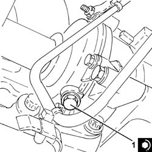
Applies to: engines: 2.2; all production periods
- Assemble the rigid coolant inlet pipe and water pump complete with a new seal.
1. Place the thermostat (1a) complete with water pump rigid coolant inlet pipe (1b) and new O-rings (1c) back in its housing and secure it tightening the bolts (1d) to the recommended torque.
Component | Fastening | dia | Value (daNm) | Validity |
|---|---|---|---|---|
Thermostat unit | Bolt | M6 x 1 | (engine crankcase side) 0.6 - 1.0 | 2.2 |
2. Place the engine coolant temperature sensor in its housing and tighten it to the recommended torque.
Component | Fastening | dia | Value (daNm) | Validity |
|---|---|---|---|---|
Engine coolant temperature sensor | - | M12 x 1.5 | (thermostat unit side) 2.1 | 2.2 |
3. Connect the coolant delivery and return pipes to the climate control system heater, thermostat side, and tighten the band.
4. Connect the upper coolant input sleeve to the radiator, thermostat side, and tighten the band.
5. Connect the electrical connection to the engine coolant temperature sensor.
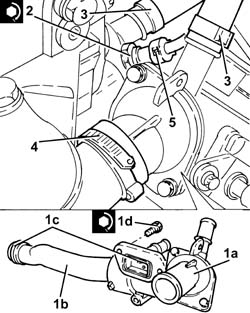
Applies to: engines: 2.2; all production periods
- Place the sound insulation cover back in its housing and secure it to the engine using the three pins.
- Connect the negative battery terminal.
Op. 0010T20 ENGINE COOLANT - CHANGE
- Remove the vehicle from the lift.
Applies to: engines: 1.9 JTD 8v, 1.9 JTD 16v; all production periods
Removing
Refitting- Position the vehicle on the lift.
Op. 1016A10 SOUND-PROOFING COVER - R.R
Op. 5530B52 BATTERY SUPPORT/DRIP TRAY - R.R
Op. 1048B19 TURBOCHARGER AIR OUTLET HOSE -R.R.
Op. 1048A42 SLEEVE FROM FLOW METER TO TURBO CHARGER AIR INLET PIPE - R + R
Op. 7055B54 UNDER ENGINE PROTECTION/GUARD - R.R.
Op. 1048A50 TURBOCHARGER AIR INTAKE PIPE - R.R.
Op. 1048A10 AIR FILTER ASSEMBLY - R.R.
Op. 1084A16 OIL DIPSTICK PIPE - R.R
1. Undo the upper bolts fixing the exhaust manifold heat shield.
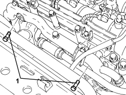
Applies to: engines: 1.9 JTD 8v, 1.9 JTD 16v; all production periods
1. Undo the nuts (1a) and the bolt (1b) securing the exhaust manifold heat shield.
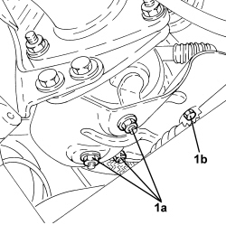
Applies to: engines: 1.9 JTD 8v, 1.9 JTD 16v; all production periods
1. Undo the radiator coolant drain plug.
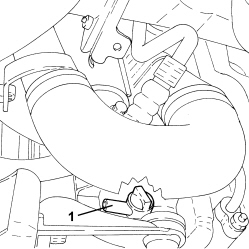
Applies to: engines: 1.9 JTD 8v, 1.9 JTD 16v; all production periods
1. Loosen the band and disconnect the lower coolant inlet hose from the radiator, water pump rigid coolant inlet pipe side.
2. Undo the bolt (2a) and the nut (2b), loosen the band (2c) and move the system supply pipe (2d) sideways.
3. Loosen the band and disconnect the coolant outlet pipe from the coolant/exhaust gas heat exchanger for the EGR system, water pump rigid fluid inlet pipe side.
4. Loosen the band and disconnect the hose from the rigid coolant return pipe from the engine oil heat exchanger.
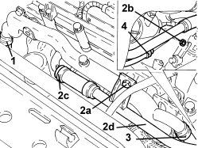
Applies to: engines: 1.9 JTD 8v, 1.9 JTD 16v; all production periods
- Undo the bolt fixing the timing protective cover to the water pump rigid inlet pipe.
1. Undo the bolts (1a) and remove the water pump inlet pipe (1b).
- Remove the gasket.
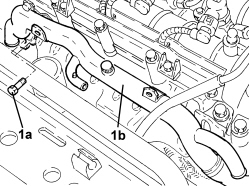
Applies to: engines: 1.9 JTD 8v, 1.9 JTD 16v; all production periods
Refitting
Removing1. Place the water pump rigid inlet pipe (1a) , complete with gasket, in position and secure it tightening the bolts (1b) to the recommended torque.
Component | Fastening | dia | Value (daNm) | Validity |
|---|---|---|---|---|
Water pump rigid inlet pipe | Bolt | M6 | (cylinder head side) 0.8 - 1.0 | 1.9 JTD 16v 1.9 JTD 8v |
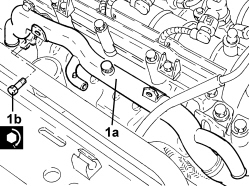
Applies to: engines: 1.9 JTD 8v, 1.9 JTD 16v; all production periods
- Tighten the bolt fixing the timing protective cover to the water pump rigid inlet pipe.
- Connect the hose to the engine oil heat exchanger rigid coolant return pipe and tighten the band.
- Connect the coolant outlet pipe from the coolant/exhaust gas heat exchanger for the EGR system, water pump rigid fluid inlet pipe side and tighten the band.
- Place the system supply pipe in its housing, connect it tothe water pump rigid coolant inlet pipe and tighten the band, the bolt and the nut.
- Connect the lower coolant inlet hose from the radiator, water pump rigid coolant inlet pipe side and tighten the band.
- Tighten the coolant drain plug to the radiator.
- Tighten the lower nuts and the bolt securing the exhaust manifold heat shield.
- Tighten the upper bolts fixing the exhaust manifold heat shield.
Op. 1084A16 OIL DIPSTICK PIPE - R.R
Op. 1048A10 AIR FILTER ASSEMBLY - R.R.
Op. 1048A50 TURBOCHARGER AIR INTAKE PIPE - R.R.
Op. 7055B54 UNDER ENGINE PROTECTION/GUARD - R.R.
Op. 1048A42 SLEEVE FROM FLOW METER TO TURBO CHARGER AIR INLET PIPE - R + R
Op. 1048B19 TURBOCHARGER AIR OUTLET HOSE -R.R.
Op. 5530B52 BATTERY SUPPORT/DRIP TRAY - R.R
Op. 0010T20 ENGINE COOLANT - CHANGE
Op. 1016A10 SOUND-PROOFING COVER - R.R
- Remove the vehicle from the lift.
Applies to: engines: 2.4 JTD 20v; all production periods
- It is not possible on this version to remove-refit the water pump rigid inlet pipe on the vehicle.
To perform this operation, remove/refit the power unit
Op. 1004B14 POWER UNIT WITH AUTOMATIC TRANSMISSION R + R
and then work at the bench, customising the engine service procedures for this operation.
Applies to: engines: 1.8; all production periods
Removing
RefittingOp. 0010T20 ENGINE COOLANT - CHANGE
Op. 7055B54 UNDER ENGINE PROTECTION/GUARD - R.R.
Op. 1084A16 OIL DIPSTICK PIPE - R.R
Op. 1072C44 EXHAUST MANIFOLD HEAT SHIELD - R+R
Op. 1080B94 FRONT LAMBDA SENSOR TO WITH CATALYTIC CONVERTER - R.R
Op. 1072C16 EXHAUST MANIFOLD WITH CATALYTIC CONVERTER - R.R.
Op. 1084B36 ENGINE OIL FILTER MOUNTING AND HEAT EXCHANGER - R.R
1. Undo the bolts (1a) and remove the water pump rigid inlet pipe (1b) complete with O-rings.
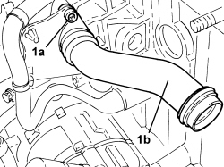
Applies to: engines: 1.8; all production periods
Refitting
Removing- Place the water pump rigid inlet pipe, complete with new O-rings in position and secure it using the bolts.
Op. 1084B36 ENGINE OIL FILTER MOUNTING AND HEAT EXCHANGER - R.R
Op. 1072C16 EXHAUST MANIFOLD WITH CATALYTIC CONVERTER - R.R.
Op. 1080B94 FRONT LAMBDA SENSOR TO WITH CATALYTIC CONVERTER - R.R
Op. 1072C44 EXHAUST MANIFOLD HEAT SHIELD - R+R
Op. 1084A16 OIL DIPSTICK PIPE - R.R
Topics linked from this page (17)
- 0010T20 ENGINE COOLANT - CHANGE
- 1004B14 POWER UNIT WITH AUTOMATIC TRANSMISSION R + R
- 1016A10 SOUND-PROOFING COVER - R.R
- 1048A10 AIR FILTER ASSEMBLY - R.R.
- 1048A42 SLEEVE FROM FLOW METER TO TURBO CHARGER AIR INLET PIPE - R + R
- 1048A50 TURBOCHARGER AIR INTAKE PIPE - R.R.
- 1048B19 TURBOCHARGER AIR OUTLET HOSE -R.R.
- 1072C16 EXHAUST MANIFOLD WITH CATALYTIC CONVERTER - R.R.
- 1072C44 EXHAUST MANIFOLD HEAT SHIELD - R+R
- 1080B94 FRONT LAMBDA SENSOR TO WITH CATALYTIC CONVERTER - R.R
- 1084A16 OIL DIPSTICK PIPE - R.R
- 1084B36 ENGINE OIL FILTER MOUNTING AND HEAT EXCHANGER - R.R
- 5530B10 BATTERY - R+R
- 5530B52 BATTERY SUPPORT/DRIP TRAY - R.R
- 7055B54 UNDER ENGINE PROTECTION/GUARD - R.R.
- A001 BATTERY
- K036 ENGINE COOLANT TEMPERATURE SENSOR/SENDER UNIT
Topics that link to this page (6)
- 1064A27 PIPE BETWEEN VACUUM RESERVOIR AND ACTUATOR CONTROL SOLENOID VALVE - R.R.
- 1072C44 EXHAUST MANIFOLD HEAT SHIELD - R+R
- 1080B40 CATALYTIC PRE-CONVERTER - R.R
- 1080B62 CATALYTIC CONVERTER - R + R
- 1084B40 ENGINE OIL DELIVERY PIPE TO TURBOCHARGER - R + R
- 1084B42 ENGINE OIL RETURN PIPE FROM TURBO - R + R